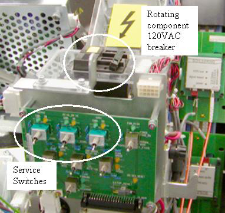

Operating Documentation
Direction 5307452-8EN, Rev# 4
Discovery CT750 HD Service Methods - Adv
Operating Documentation |
| Required Persons | Preliminary Reqs | Procedure | Finalization |
|---|---|---|---|
| 1 | 20 mins | none |
This procedure defines the necessary steps to replace the DAS/Detector Air Filter.
| Last Revised: | January 18, 2008 |
| Item | Qty | Effectivity | Part# | Manufacturer | |
|---|---|---|---|---|---|
| Hex wrenches | (Field Supplied) | - | - | - | |
| Item | Qty | Effectivity | Part# | Manufacturer |
|---|---|---|---|---|
| Tywraps | AR | - | - | - |
| Item | Qty | Effectivity | Part# | Manufacturer | |
|---|---|---|---|---|---|
| Plenum Filter assembly | 1 | - | - | - | |
| CRUSH HAZARD. | |
| UNEXPECTED GANTRY ROTATION CAN CAUSE SERIOUS INJURY. | |
| Never service the gantry with the axial drive enabled. Use the gantry rotation lock to lock out gantry rotation. See safety menu of Service Document gui for appropriate procedures. |
Remove right side gantry cover.
Refer to Replacement → Gantry → Enclosure → (Cover Removal Procedures).
Disable Axial Drive and HVDC on the service switch panel then remove the gantry left side, top and front covers.
Shut down power to the rotating assembly using the AC power switch on the service switch panel. See Illustration 1.
Illustration 1: Rotating assembly power breaker

| ESD Hazard with the air plenum removed since the Detector A/D boards are exposed. Use proper ESD grounding when working in this area. | |
Position the DAS at 12 o’clock and lock gantry rotation.
Remove the plenum using the Detector Air Plenum Removal and Installation procedure.
Remove the filter assembly from the back of the air plenum and reinstall new filter assembly. See Illustration 2.
The filter assembly is attached to the rear of the plenum. The back side of the filter is an EMC screen that can be damaged if poked or hit. Be very careful with the new filter assembly.
Illustration 2: Air filter

Install the plenum using the Detector Air Plenum Removal and Installation procedure.
Install the gantry front, top and left side covers.
Refer to Replacement → Gantry → Enclosure → (Cover Removal Procedures).
Enable 120 VAC HVDC and Axial Drive service switches from the service switch panel. Press the table drives enable button on the lower right corner of the service switch panel.
Install the gantry right side cover.
Wait for the detector temperature to return to normal.
Perform a Fastcal.